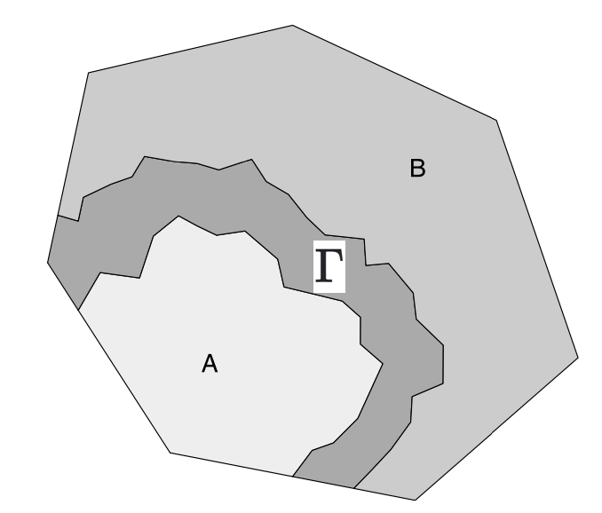

Gaussian processes are lovely things. I’m a big fan. They are, however, thirsty. They will take your memory, your time, and anything else they can. Basically, the art of fitting Gaussian process models is the fine art of reducing the GP model until it’s simple enough to fit while still being flexible enough to be useful.
There’s a long literature on effective approximation to Gaussian Processes that don’t turn out to be computational nightmares. I’m definitely not going to summarise them here, but I’ll point to an earlier (quite technical) post that mentioned some of them. The particular computational approximation that I am most fond of makes use of the Markov property and efficient sparse matrix computations to reduce memory use and make the linear algebra operations significantly faster.
One of the odder challenges with Markov models is that information about how Markov structures work in more than one dimension can be quite difficult to find. So in this post I am going to lay out some of the theory.
A much more practical (and readable) introduction to this topic can be found in this lovely paper by Finn, David, and Håvard. So don’t feel the burning urge to read this post if you don’t want to. I’m approaching the material from a different viewpoint and, to be very frank with you, I was writing something else and this section just became extremely long so I decided to pull it out into a blog post.
So please enjoy today’s entry in Dan writes about the weird corners of Gaussian processes. I promise that even though this post doesn’t make it seem like this stuff is useful, it really is. If you want to know anything else about this topic, essentially all of the Markov property parts of this post come from Rozanov’s excellent book Markov Random Fields.
Gaussian processes via the covariance operator
The problem with basing our computations off a RKHS is that it is not immediately obvious how we will do that. This is in contrast to a covariance function approach, where it is quite easy1 to work out how to convert the model specification to something you can attack with a computer.
The extra complexity of the RKHS pays off in modelling flexibility, both in terms of the types of model that can be build and the spaces2 you can build them on. I am telling you this now because things are about to get a little mathematical.
To motivate the technique, let’s consider the covariance operator \[ [\mathcal{C}f](s) = \int_T c(s, s') f(s') \, ds', \] where \(T\) is the domain over which the GP is defined (usually \(\mathbb{R}^d\) but maybe you’re feeling frisky).
To see how this could be useful, we are going to need to think a little bit about how we can simulate a multivariate Gaussian random variable \(N(0, \Sigma)\). To do this, we first compute the square root3 \(L = \Sigma^{1/2}\) and sample a vector of iid standard normal variables \(z \sim N(0,I)\). Then \(u = Lz \sim N(0, \Sigma)\). You can check it by checking the covariance. (it’s ok. I’ll wait.)
While the square root of the covariance operator \(\mathcal{C}^{1/2}\) is a fairly straightforward mathematical object^{Albeit a bit advanced. It’s straightforward in the sense that for an infinite-dimensional operaotr it happens to work a whole like a symmetric positive semi-definite matrix. It is not straightforward in the sense that your three year old could do it. Your three year old can’t do it. But it will keep them quiet in the back seat of the car while you pop into the store for some fags. It’s ok. The window’s down.}, the analogue of the iid vector of standard normal random variables is a bit more complex.
White noise and its associated things
Thankfully I’ve covered this in a previous blog. The engineering definition of white noise as a GP \(w(\cdot)\) such that for every \(s\), \(w(s)\) is an iid \(N(0,1)\) random variable is not good enough for our purposes. Such a process is hauntingly irregular4 and it’s fairly difficult to actually do anything with it. Instead, we consider white noise as a random function defined on the subsets of our domain. This feels like it’s just needless technicality, but it turns out to actually be very very useful.
Definition 1 (White noise) A (complex) Gaussian white noise is a random measure5 \(W(\cdot)\) such that, for every6 disjoint7 pair of sets \(A, B\) satisfies the following properties
- \(W(A) \sim N(0, |A|)\)
- If \(A\) and \(B\) are disjoint then \(W(A\cup B) = W(A) + W(B)\)
- If \(A\) and \(B\) are disjoint then \(W(A)\) and \(W(B)\) are uncorrelated8, ie \(\mathbb{E}(W(A) \overline{W(B)}) = 0\).
This doesn’t feel like we are helping very much because how on earth am I going to define the product \(\mathcal{C}^{1/2} W\)? Well the answer, you may be shocked to discover, requires a little bit more maths. We need to define an integral, which turns out to not be shockingly difficult to do. The trick is to realise that if I have an indicator function \[ 1_A(s) = \begin{cases} 1, \qquad &s \in A \\ 0, & s \not \in A \end{cases} \] then9 \[ \int_T 1_A(s)\, dW(s) = \int_A dW(s) = W(A) \sim N(0, |A|). \] In that calculation, I just treated \(W(s)\) like I would any other measure. (If you’re more of a probability type of girl, it’s the same thing as noticing \(\mathbb{E}(1_A(X) = \Pr(X \in A)\).)
We can extend the above by taking the sum of two indicator function \[ f(s) = f_11_{A_1}(s) + f_2 1_{A_2}(s), \] where \(A_1\) and \(A_2\) are disjoint and \(f_1\) and \(f_2\) are any real numbers. By the same reasoning above, and using the linearity of the integral, we get that \[\begin{align*} \int_T f(s) \, dW(s) &= f_1 \int_{A_1} \,d W(s) + f_2 \int_{A_2} \,d W(s) \\ &= N(0, f_1^2 |A_1| + f_2^2 |A_2|) \\ &= N\left(0, \int_T f(s)^2 \,ds\right), \end{align*}\] where the last line follows by doing the ordinary10 integral of \(f(s)\).
It turns out that every interesting function can be written as the limit of piecewise constant functions11 and we can therefore define for any function12 \(f\in L^2(T)\) \[ \int f(s) \, dW(s) \sim N\left(0, \int_T f(s)^2 \,ds\right). \]
With this notion in hand, we can finally define the action of an operator on white noise.
Definition 2 (The action of an operator on white noise) Let \(\mathcal{A}\) be an operator on some Hilbert space of functions \(H\) with adjoint \(\mathcal{A}^*\), then we define \(\mathcal{A}W\) to be the random measure that satisfies, for every \(f \in \operatorname{Dom}(\mathcal{A^*})\), \[ \int_T f(s) \, d (\mathcal{A}W)(s) = \int_T \mathcal{A}^*f(s) \, dW(s). \]
The generalised Gaussian process \(\eta = \mathcal{C}^{1/2}W\)
One of those inconvenient things that you may have noticed from above is that \(\mathcal{C}^{1/2}W\) is not going to be a function. It is going to be a measure or, as it is more commonly known, a generalised Gaussian process. This is the GP analogue of a generalised function and, as such, only gives an actual value when you integrate it against some sufficiently smooth function.
Definition 3 (Generalised Gauusian Process) A generalised Gaussian process \(\xi\) is a random signed measure (or a random generalised function) that, for any \(f \in C^\infty_0(T)\), \(\int_T f(s)\,d\xi(s)\) is Gaussian. We will often write \[ \xi(f) = \int_T f(s)\,d\xi(s), \] which helps us understand that a generalised GP is indexed by functions.
In order to separate this out from the ordinary GP \(u(s)\), we will write it as \[ \eta = \mathcal{C}^{1/2}W. \] These two ideas coincide in the special case where \[ \eta = u(s)\,ds, \] which will occur when \(\mathcal{C}^{1/2}\) smooths the white noise sufficiently. In all of the cases we really care about today, this happens. But there are plenty of Gaussian processes that can only be considered as generalised GPs13
Approximating GPs when \(\mathcal{C}^{-1/2}\) is a differential operator
This type of construction for \(\eta\) is used in two different situations: kernel convolution methods directly use the representation, and the SPDE methods of Lindgren, Lindström and Rue use it indirectly.
I’m interested in the SPDE method, as it ties into today’s topic. Also because it works really well. This method uses a slightly modified version of the above equation \[ \mathcal{C}^{-1/2}\eta = W, \] where \(\mathcal{C}^{-1/2}\) is the (left) inverse of \(\mathcal{C}^{1/2}\). I have covered this method in a previous post, but to remind you the SDPE method in its simplest form involves three steps:
Approximate \(\eta = \sum_{j=1}^n u_j \psi_j(s)\,ds\) for some set of weights \(u \sim N(0, Q^{-1})\) and a set of deterministic functions \(\psi_j\) that we are going to use to approximate the GP
Approximate14 the test function \(f = \sum_{k=1}^n f_k \psi_k(s)\) for some set of deterministic weights \(f_j\)
Plug these approximations into the equation \(\mathcal{C}^{-1/2} \eta = W\) to get the equation \[ \sum_{k,j=1}^n u_j f_k \int_T \psi_k(s) \mathcal{C}^{-1/2} \psi_j(s)\,ds \sim N\left(0, \sum_{j,k=1}^n \psi_j(s)\psi_k(s)\,ds\right) \]
As this has to be true for every vector \(f\), this is equivalent to the linear system \[ K u \sim N(0, C), \] where \(K_{kj} = \int_T \psi_k(s) \mathcal{C}^{-1/2} \psi_j(s)\,ds\) and \(C_{kj} = \sum_{j,k=1}^n \psi_j(s)\psi_k(s)\).
Obviously this method is only going to be useful if it’s possible to compute the elements of \(K\) and \(C\) efficiently. In the special case where \(\mathcal{C}^{-1/2}\) is a differential operator15 and the basis functions are chosen to have compact support16, these calculations form the basis of the finite element method for solving partial differential equations.
The most important thing, however, is that if \(\mathcal{C}^{-1/2}\) is a differential operator and the basis functions have compact support, the matrix \(K\) is sparse and the matrix \(C\) can be made17 diagonal, which means that \[ u \sim N(0, K^{-1} C K^{-T}) \] has a sparse precision matrix. This can be used to make inference with these GPs very efficient and is the basis for GPs in the INLA software.
A natural question to ask is when will we end up with a sparse precision matrix? The answer is not quite when \(\mathcal{C}^{-1/2}\) is a differential operator. Although that will lead to a sparse precision matrix (and a Markov process), it is not required. So the purpose of the rest of this post is to quantify all of the cases where a GP has the Markov property and we can make use of the resulting computational savings.
The Markov property for on abstract spaces
Part of the reason why I introduced the notion of a generalised Gaussian process is that it is useful in the definition of the Markov process. Intuitively, we know what this definition is going to be: if I split my space into three disjoint sets \(A\), \(\Gamma\) and \(B\) in such a way that you can’t get from \(A\) to \(B\) without passing through \(\Gamma\), then the Markov property should say, roughly, that every random variable \(\{x(s): s\in A\}\) is conditionally independent of every random variable \(\{x(s): s \in B\}\) given (or conditional on) knowing the values of the entire set \(\{x(s): s \in \Gamma\}\).

That definition is all well and good for a hand-wavey approach, but unfortunately it doesn’t quite hold up to mathematics. In particular, if we try to make \(\Gamma\) a line18, we will hit a few problems. So instead let’s do this properly.
All of the material here is covered in Rozanov’s excellent but unimaginatively named book Markov Random Fields.
To set us up. we should consider the types of sets we have. There are three main sets that we are going to be using: the open19 set \(S_1 \subset T\), its boundary20 \(\Gamma \supseteq \partial S\). For example, if \(T = \mathbb{R}^2\) and \(S\) is the interior of the unit circle, and its open complement \(S_2 = S_1^C \backslash \partial S_1\). For a 2D example, if \(S_1\) is the interior of the unit circle, then \(\Gamma\) could be the unit circle, and \(S_2\) would be the _exterior of the unit circle.
One problem with these sets, is that while \(S_1\) will be a 2D set, \(\Gamma\) is only one dimensional (it’s a circle, so it’s a line!). This causes some troubles mathematically, which we need to get around by using the \(\epsilon\) fattening of \(\Gamma\), which is the set \[ \Gamma^\epsilon = \{s \in T : d(s, \Gamma) < \epsilon\}, \] where \(d(s, \Gamma)\) is the distance from \(s\) to the nearest point in \(\Gamma\).
With all of this in hand we can now give a general definition of the Markov property.
Definition 4 (The Markov property for a generalised Gaussian process) Consider a zero mean generalised GP21 \(\xi\). For any22 subset \(A \subset T\), we define the collection of random variables23 \[ H(A) = \operatorname{span}\{\xi(f): \operatorname{supp}(f) \subseteq A\}. \] We will call \(\{H(A); A \subseteq T\}\) the random field24 associated with \(\xi\).
Let \(\mathcal{G}\) be a system of domains25 in \(T\). We say that \(\xi\) has the Markov26 property (with respect to \(\mathcal{G}\)) if, for all \(S_1 \in \mathcal{G}\) and for any sufficiently small \(\epsilon > 0\), \[ \mathbb{E}(xy \mid H(\Gamma^\epsilon)) = 0, \qquad x \in H(S_1), y \in H(S_2), \] where \(\Gamma = \partial S_1\) and \(S_2 = S_1^C \backslash \Gamma\).
Rewriting the Markov property I: Splitting spaces
The Markov property defined above is great and everything, but in order to manipulate it, we need to think carefully about the how the domains \(S_1\), \(\Gamma^\epsilon\) and \(S_2\) can be used to divide up the space \(H(T)\). To do this, we need to basically localise the Markov property to one set of \(S_1\), \(\Gamma\), \(S_2\). This concept is called a splitting27 of \(H(S_1)\) and \(H(S_2)\) by \(H(\Gamma^\epsilon)\)
Definition 5 For some domain \(S_1\) and \(\Gamma \supseteq \partial S_1\), set \(S_2 = (S_1 \cup \Gamma)^c\). The space \(H(\Gamma^\epsilon)\) splits \(H(S_1)\) and \(H(S_2)\) if \[ H(T) = H(S_1 \ominus \Gamma^\epsilon) \oplus H(\Gamma^\epsilon) \oplus H(S_2 \ominus \Gamma^\epsilon), \] where \(\oplus\) is the sum of orthogonal components28 and \(x\in H(S \ominus \Gamma^\epsilon)\) if and only if there is some \(y \in H(S)\) such that29 \[ x = y - \mathbb{E}(y \mid H(\Gamma^\epsilon)). \]
This emphasizes that we can split our space into three separate components: inside \(S_1\), outside \(S_1\) and on the boundary of \(S_1\) and the ability to do that for any30 domain is the key part of the Markov31 property.
A slightly more convenient way to deal with spiting spaces is the case where the we have overlapping sets \(A\), \(B\) that cover the domain (ie \(A \cup B = T\)) and the splitting set is their intersection \(S = A \cap B\). In this case, the splitting equation becomes \[ H(A)^\perp \perp H(B)^\perp. \] I shan’t lie: that looks wild. But it makes sense when you take \(A = S_1 \cup \Gamma^\epsilon\) and \(B = S_2 \cup \Gamma^\epsilon\), in which case \(H(A)^\perp = H(S_2)\) and \(H(B)^\perp = H(S_1)\).
The final thing to add before we can get to business is a way to get rid of all of the annoying \(\epsilon\)s. The idea is to take the intersection of all of the \(H(\Gamma^\epsilon)\) as the splitting space. If we define \[ H_+(\Gamma) = \bigcap_{\epsilon>0} H(\Gamma^\epsilon) \] we can re-write32 the splitting equation as \[\begin{align*} &H_+(\Gamma) = H_+(S_1 \cup \Gamma) \cap H_+(S_1 \cup \Gamma) \\ & H_+(S_1 \cup \Gamma)^\perp \perp H_+(S_2 \cup \Gamma)^\perp. \end{align*}\]
This gives the following statement of the Markov property.
Definition 6 Let \(\mathcal{G}\) be a system of domains33 in \(T\). We say that \(\xi\) has the Markov property (with respect to \(\mathcal{G}\)) if, for all \(S_1 \in \mathcal{G}\), \(\Gamma\supseteq \partial S_1\) ,\(S_2 = S_1^C \backslash \Gamma\), we have, for some \(\epsilon > 0\) \[ H_+(\Gamma^\epsilon) = H_+(S_1 \cup \Gamma^\epsilon) \cap H_+(S_1 \cup \Gamma^\epsilon) \] and \[ H_+(S_1 \cup \Gamma)^\perp \perp H_+(S_2 \cup \Gamma)^\perp. \]
Rewriting the Markov property II: The dual random field \(H^*(A)\)
We are going to fall further down the abstraction rabbit hole in the hope of ending up somewhere useful. In this case, we are going to invent an object that has no reason to exist and we will show that it can be used to compactly restate the Markov property. It will turn out in the next section that it is actually a useful characterization that will lead (finally) to an operational characterisation of a Markovian Gaussian process.
Definition 7 (Dual random field) Let \(\xi\) be a generalised Gaussian process with an associated random field \(H(A)\), \(A \subseteq T\) and let \(\mathcal{G}\) be a complete system of open domains in \(T\). The dual to the random field \(H(A)\), \(A \subseteq T\) on the system \(\mathcal{G}\) is the random field \(H^*(A)\), \(A \subseteq T\) that satisfies \[ H^*(T) = H(T) \] and \[ H^*(A) = H_+(A^c)^\perp, \qquad A \in \mathcal{G}. \]
This definition looks frankly a bit wild, but I promise you, we will use it.
The reason for its structure is that it directly relates to the Markov property. In particular, the existence of a dual field implies that, if we have any \(S_1 \in \mathcal{G}\), then \[\begin{align*} H_+(S_1 \cup \bar{\Gamma^\epsilon}) \cap H_+(S_1 \cup \bar{\Gamma^\epsilon}) &= H^*((S_1 \cup \bar{\Gamma^\epsilon})^c)^\perp \cap H^*((S_2 \cup \bar{\Gamma^\epsilon})^c)^\perp \\ H^*((S_1 \cup \bar{\Gamma^\epsilon})^c \cup (S_2 \cup \bar{\Gamma^\epsilon})^c) \\ &= H_+((S_1 \cup \bar{\Gamma^\epsilon}) \cap (S_2 \cup \bar{\Gamma^\epsilon})) \\ &= H_+(\Gamma^\epsilon). \end{align*}\] That’s the first thing we need to show to demonstrate the Markov property.
The second part is much easier. If we note that \((S_2 \cup \Gamma)^c = S_1 \backslash \Gamma\), it follows that \[ H_+(S_1 \cup \Gamma)^\perp = H^*(S_2 \backslash \Gamma). \]
This gives us our third (and final) characterisation of the (second-order) Markov property.
Definition 8 Let \(\mathcal{G}\) be a system of domains34 in \(T\). Assume that the random field \(H(\cdot)\) has an associated dual random field \(H^*(\cdot)\).
We say that \(H(A)\), \(A \in \mathcal{G}\) has the Markov property (with respect to35 \(\mathcal{G}\)) if and only if for all \(S_1 \in \mathcal{G}\), \[ H^*(S_1 \backslash \Gamma) \perp H^*(S_2 \backslash \Gamma). \] When this holds, we say that the dual field is orthogonal with respect to \(\mathcal{G}\).
There is probably more to say about dual fields. For instance, the dual of the dual field is the original field. Neat, huh. But really, all we need to do is know that an orthogonal dual field implies a the Markov property. Because next we are going to construct a dual field, which will give us an actually useful characterisation of Markovian GPs.
Building out our toolset with the conjugate GP
In this section, our job is to construct a dual random field. To do this, we are going to exploit the notion of a conjugate36 Gaussian process, which is a generalised37 GP \(\xi^*\) such that38 \[ \mathbb{E}(\xi(f)\xi^*(g)) = \int_T f(s)g(s)\,ds. \] It is going to turn out that \(H^*(\cdot)\) is the random field generated by \(\xi^*\). The condition that \(H(T) = H^*(T)\) can be assumed a fortiori. What we need to show is that the existence of a conjugate Gaussian process implies that, for all \(S \subset \mathcal{G}\), \(H^*(S) \perp H^*( S^C)\).
We will return to the issue of whether or not \(\xi^*\) actually exists later, but assuming it does let’s see how it’s associated random field \(H*(S)\) relates to \(H_+(S^c)^\perp\) for \(S\in \mathcal{G}\). While it is not always true that these things are equal, it is always true that \[ H^*(S) \subseteq H_+(S^c)^\perp. \] We will consider when equality holds in the next section. But first let’s show the inclusion.
The space \(H^*(S)\) contains all random variables of the form \(\xi^*(u)\), where the support of \(u\) is compact in \(S\), which means that it is a positive distance from \(S^C\). That means that, for some \(\epsilon > 0\), the support of \(u\) is outside39 of \((S^c)^\epsilon\). So if we fix that \(u\) and consider any smooth \(v\) with support in40 \((S^c)^\epsilon\), then, from the definition of the conjugate GP, we have41 \[ \mathbb{E}(\xi(v)\xi^*(u)) = \int_T u(s) v(s)\, ds = 0. \] This means that \(\xi^*(u)\) is perpendicularity to \(\xi(v)\) and, therefore, \(\xi^*(u) \in H((S^c)^\epsilon)^\perp\). Now, \(H_+(S^c)\) is defined as the intersection of these spaces, but it turns out that42 for any spaces \(A\) and \(B\), \[ (A \cap B)^\perp = A^\perp \cup B^\perp. \] This is because \(A\cap B \subset A\) and so every function that’s orthogonal to functions in \(A\) is also orthogonal to functions in \(A\cap B\). The same goes for \(B\). We have shown that \[ H_+(S^c) = \bigcup_{\epsilon > 0} H((S^c)^\epsilon)^\perp \] and every \(\eta^* \in H^*(S)\) is in \(H((S^c)^\epsilon)^\perp\) for some \(\epsilon >0\). This gives the inclusion \[ H^*(S) \subseteq H_+(S^c)^\perp. \]
To give conditions for when it’s an actual equality is a bit more difficult. It, maybe surprisingly, involves thinking carefully about the reproducing kernel Hilbert space of \(\xi\). We are going to take this journey together in two steps. First we will give a condition on the RKHS that guarantees that \(\xi^*\) exists. Then we will look at when \(H^*(S) = H_+(S^c)^\perp\).
When does \(\xi^*\) exits? or, A surprising time with the reproducing kernel Hilbert space
First off, though, we need to make sure that \(\xi^*\) exists. Obviously43 if it exists then it is unique and \(\xi^{**} = \xi\).
But does it exist? The answer turns out to be sometimes. But also usually. To show this, we need to do something that is, frankly, just a little bit fancy. We need to deal with the reproducing kernel Hilbert space44. This feels somewhat surprising, but it turns out that it is a fundamental object45 and intrinsically tied to the space \(H(T)\).
The reproducing kernel space, which we will now46 call \(V(T)\) because we are using \(H\) for something else in this section, is a set of deterministic generalised functions \(\psi\), that can be evaluated at \(C_0^\infty(T)\) functions47 as \[ \psi(u) = \int_T u(s)\,d\psi(s), \qquad u \in C_0^\infty(T). \] A generalised function \(\psi \in V(T)\) if there is a corresponding random variable in \(\eta \in H(T)\) that satisfies \[ \psi(u) = \mathbb{E}\left[\xi(u) \eta\right], \qquad u \in C_0^\infty(T). \] It can be shown48 that there is a one-to-one correspondence between \(H(T)\) and \(V(T)\), in the sense that for every \(\psi\) there is a unique \(\eta = \eta(\psi) \in H(T)\).
We can use this correspondence to endow \(V(T)\) with an inner product \[ \langle \psi_1, \psi_2\rangle_{V(T)} = \mathbb{E}(\eta(\psi_1), \eta(\psi_2)). \]
So far, so abstract. The point of the conjugate GP is that it gives us an explicit construction of the49 mapping \(\eta\). And, importantly for the discussion of existence, if there is a conjugate GP then the RKHS has a particular relationship with \(C_0^\infty(T)\).
To see this, let’s assume \(\xi^*\) exists. Then, for each \(v \in C_0^\infty(T)\), the generalised function \[ \psi_v(u) = \int_T u(s) v(s)\,ds \] is in \(V(T)\) because, by the definition of \(\xi^*\) we have that \[ \phi_v(u) = \mathbb{E}(\xi(u)\xi^*(v)) = \int_T u(s) v(s)\,ds. \] Hence, the embedding is given by \(\eta(v) = \xi^*(v)\).
Now, if we do a bit of mathematical trickery and equate things that are isomorphic, \(C_0^\infty(T) \subseteq V(T)\). On its face, that doesn’t make much sense because on the left we have a space of actual functions and on the right we have a space of generalised functions. To make it work, we associate each smooth function \(v\) with the generalised function \(\psi_v\) defined above.
This make \(V(T)\) the closure50 of \(C_0^\infty(T)\) under the norm \[ \|v\|^2_{V(T)} = \mathbb{E}\left(\xi^*(v)^2\right). \] and hence we have showed that if there is a conjugate GP, then \[ C_0^\infty(T) \subseteq V(T), \qquad \overline{C_0^\infty(T)} = V(T). \] It turns out that if \(C_0^\infty(T)\) is dense in \(V(T)\) then that implies that there exists a conjugate function defined through the isomorphism \(\eta(\cdot)\). This is because \(H(T) = \eta(V(T))\) and \(\eta\) is continuous. Hence if we choose \(\xi^*(v) = \eta(v)\) then \(H^*(T) = H(T)\).
We have shown the following.
Theorem 1 A conjugate GP exists if and only if \(C_0^\infty(T)\) is dense in \(V(T)\).
This is our first step towards making statements about the stochastic process \(\xi\) into statements about the RKHS. We shall continue along this road.
You might, at this point, be wondering if that condition ever actually holds. The answer is yes. It does fairly often. For instance, if \(\xi\) is a stationary GP with spectral density \(f(\omega)\), the biorothogonal function exists if and only if there is some \(k>0\) such that \[ \int (1 + |\omega|^2)^{-k}f(\omega)^{-1}\,d\omega < \infty. \] This basically says that the theory we are developing doesn’t work for GPs with extremely smooth sample paths (like a GP with the square-exponential covariance function). This is not a restriction that bothers me at all.
For non-stationary GPs that aren’t too smooth, this will also hold as long as nothing too bizarre is happening at infinity.
But when does \(H^*(S) = H_+(S^c)^\perp\)?
We have shown already51 that \[ H((S^c)^\epsilon)^\perp = \left\{\xi^*(u): u \in V(T),\, \operatorname{supp}(u) \subseteq [(S^c)^\epsilon]^c\right\} \] (that last bit with all the complements can be read as “the support of \(u\) is inside \(S\) and always more than \(\epsilon\) from the boundary.”). It follows then that \[ H_+(S^c)^\perp = \bigcup_{\epsilon>0}\left\{\xi^*(u): u \in V(T),\, \operatorname{supp}(u) \subseteq [(S^c)^\epsilon]^c\right\}. \] This is nice because it shows that \(H_+(S^c)^\perp\) is related to the space \[ V(S) = \bigcup_{\epsilon>0}\left\{ u \in V(T),\, \operatorname{supp}(u) \subseteq [(S^c)^\epsilon]^c\right\}, \] that is if \(v\in V(T)\) is a function that is the limit of a sequence of functions \(v_n \in V(T)\) with \(\operatorname{supp}(v_n) = [(S^c)^\epsilon]^c\) for some \(\epsilon>0\), then \(\xi^*(v) \in H_+(S^c)^\perp\) and every such random variable has an associated \(v\).
So, in the sense52 of isomorphisms these are equivalent, that is \[ H_+(S^c)^\perp \cong V(S). \]
This means that if we can show that \(H^*(S) \cong V(S)\), then we have two spaces that are isomorphic to the same space and use the same isomorphism \(\xi^*\). This would mean that the spaces are equivalent.
This can also be placed in the language of function spaces. Recall that \[ H^*(S) = \overline\{\xi(u): u \in C_0^\infty(S)\}. \] Hence \(H^*(S)\) will be isomorphic to \(V(S)\) if and only if \[ V(S) = \overline{C_0^\infty(S)}, \] that is, if and only if every \(v \in V(S)\) is the limit of a sequence of smooth functions compactly supported within \(S\).
This turns out to not always be true, but it’s true in the situations that we most care about. In particular, we get the following theorem, which I am certainly not going to prove.
Assume that the conjugate GP \(\xi^*\) exists. Assume that either of the following holds:
Multiplication by a function \(w \in C_0^\infty\) is bounded in \(V(T)\), ie \[ \|wu \|_{V(T)} \leq C(w) \|u\|_{V(T)}, \qquad u \in C_0^\infty (T). \]
The shift operator is bounded under both the RKHS norm and the covariance53 norm for small \(s_0\), ie \[ \|u(\cdot - s_0)\| \leq C \|u\|, \qquad u \in C_0^\infty(T) \] holds in both norms for all \(s_0 \leq s_\max\), \(\s_\max >0\) sufficiently small.
Then \(H^*(\cdot)\) is the dual of \(H(\cdot)\) over the system of sets that are bounded or have bounded complements in \(T\).
The second condition is particularly important because it always holds for stationary GPs with \(C=1\) as their covariance structure is shift invariant. It’s not impossible to come up with examples of generalised GPs that don’t satisfy this condition, but they’re all a bit weird (eg the “derivative” of white noise). So as long as your GP is not too weird, you should be fine.
At long last, an RKHS characterisation of the Markov property
And with that, we are finally here! We have that \(H^*(S)\) is the dual random field to \(H(S)\), \(S\in G\) and we have a lovely characterisation of \(H^*(S)\) in terms of the RKHS \(V(S)\). We can combine this with our definition of a Markov property for GPs with a dual random field and get that a GP \(\xi\) is Markovian if and only if \[ H^*(S_1 \backslash \Gamma) \perp H^*(S_2 \backslash \Gamma). \] We can use the isomorphism to say that if \(\eta_j \in H^*(S_j \backslash \Gamma)\), \(j=1,2\), then there is a \(v_j \in V(S_j \backslash \Gamma)\) such that \[ \eta_j = \xi^*(v_j). \] Moreover, this isomorphism is unitary (aka it preserves the inner product) and so \[ \mathbb{E}(\eta_1 \eta_2) = \langle v_1, v_2\rangle_{V(T)}. \] Hence, \(\xi\) has the Markov property if and only if \[ \langle v_1, v_2\rangle_{V(T)} = 0, \qquad v_j \in V(S_j \backslash \Gamma),\,S_1 \in \mathcal{G},\, S_2 = S_1^c,\, j=1,2. \]
Let’s memorialise this as a theorem.
Theorem 2 A GP \(\xi\) with a conjugate GP \(\xi^*\) is Markov if and only if its RKHS is local, ie if \(v_1\) and \(v_2\) have disjoint supports, then \[ \langle v_1, v_2\rangle_{V(T)} = 0. \]
This result is particularly nice because it entirely characterises the RHKS inner product of a Markovian GP. The reason for this is a deep result from functional analysis called Peetre’s Theorem, which states, in our context, that locality implies that the inner product has the form \[ \langle v_1, v_2\rangle_{V(T)} = \sum_{\mathbf{k}, \mathbf{j}} \int_T a_{\mathbf{k}\mathbf{j}}(s)\frac{\partial^{|\mathbf{k}|}u}{\partial s_\mathbf{k}} \frac{\partial^{|\mathbf{j}|}u}{\partial s_\mathbf{j}}\,ds, \] where54 \(a_{\mathbf{k}\mathbf{j}}(s)\) are integrable functions and only a finite number of them are non-zero at any point \(s\).
This connection between the RKHS and the dual space also gives the following result for stationary GPs.
Theorem 3 Let \(\xi\) be a stationary Gaussian process. Then \(\xi\) has the Markov property if and only if its spectral density is the inverse of a non-negative, symmetric polynomial.
This follows from the characterisation of the RKHS as having the inner product as \[ \langle v_1, v_2\rangle_{V(T)} = \int_T \hat{v_1}(\omega) \hat{v_2}(\omega) f(\omega)^{-1}\,d\omega, \] where \(\hat{v_1}\) is the Fourier transform of \(v_1\) and the fact that a differential operator can is transformed to a polynomial in Fourier space.
Putting this all in terms of \(\eta\)
Waaaay back near the top of the post I described a way to write a (generalised) GP in terms of its covariance operator and the white noise process \[ \eta = \mathcal{C}^{1/2}W. \] From the discussions above, it follows that the corresponding conjugate GP is given by \[ \eta^* = C^{-1/2}W. \] This means that the RKHS inner product is given by \[\begin{align*} \langle v_1, v_2 \rangle_{V(T)} = \mathbb{E}(\eta^*(v_1)\eta^*(v_2))\\ &= \mathbb{E}\left[\int_T \mathcal{C}^{-1/2}v_1(s)\,dW(s)\int_T \mathcal{C}^{-1/2}v_2(s)\,dW(s)\right] \\ &= \int_T v_1(s)\mathcal{C}^{-1}v_2(s)\,ds \end{align*}\] From the discussion above, if \(\eta\) is Markovian, then \(\mathcal{C}^{-1}\) is55 a differential56 operator.
Using the RKHS to build computationally efficient approximations to Markovian GPs
To close out this post, let’s look at how we can use the RKHS to build an approximation to a Markovian GP. This is equivalent57 to the SPDE method that was very briefly sketched above, but it only requires knowledge of the RKHS inner product.
In particular, if we have a set of basis functions \(\psi_j\), \(j=1,\ldots,n\), we can define the approximate RKHS \(V_n(T)\) as the space of all functions \[ f(s) = \sum_{j=1}^n f_j \psi_j(s) \] equipped with the inner product \[ \langle f, g \rangle_{V_n(T)} = f^T Q g, \] where the LHS \(f\) and \(g\) are functions and on the right they are the vectors of weights, and \[ Q_{ij} = \langle \psi_i, \psi_j\rangle_{V(T)}. \]
For a finite dimensional GP, the matrix that defines the RKHS inner product is58 the inverse of the covariance matrix. Hence the finite dimensional GP \(u^{(n)}(\cdot)\) associated with the RKHS \(V_n(T)\) is the random function \[ u^{(n)}(s) = \sum_{j = 1}^n u_j \psi_j(s), \] where the weights \(u \sim N(0, Q^{-1})\).
If the GP is Markovian and the basis functions have compact support, then \(Q\) is a sparse matrix and maybe he’ll love me again.
Footnotes
Step 1: Open Rasmussen and Williams.↩︎
For example, the process I’m about to describe is not meaningfully different for a process on a sphere. Whereas if you want to use a covariance function on a sphere you are stuck trying to find a whole new class of positive definite functions. It’s frankly very annoying. Although if you want to build a career out of characterising positive definite functions on increasingly exotic spaces, you probably don’t find it annoying.↩︎
Or the Cholesky factor if you add a bunch of transposes in the right places, but let’s not kid ourselves this is not a practical discussion of how to do it↩︎
For any subset \(B\), \(\sup_{s\in B} w(s) = \infty\) and \(\inf_{s \in B} w(s) = -\infty\)↩︎
Countably additive set-valued function taking any value in \(\mathbb{C}\)↩︎
measurable↩︎
\(A \cap B = \emptyset\)↩︎
If \(W(A)\) is also Gaussian then this is the same as them being independent↩︎
Recall that \(T\) is our whole space. Usually \(\mathbb{R}^d\), but it doesn’t matter here.↩︎
A bit of a let down really.↩︎
like \(f(s)\) but with more subsets↩︎
\(L^2(T)\) is the space of functions with the property that \(\int_T f(s)^2\,ds < \infty\).↩︎
eg the Gaussian free field in physics, or the de Wijs process.↩︎
You can use a separate set of basis functions here, but I’m focusing on simplicity↩︎
The standard example is \[ \mathcal{C}^{-1/2} = \kappa^2 - \sum_{j=1}^d \frac{\partial^2}{\partial s_j^2}. \]↩︎
In particular piecewise linear tent functions build on a triangulation↩︎
Read the paper, it’s a further approximation but the error is negligible↩︎
(\(d-1\))-dimensional sub-manifold↩︎
This set does not include its boundary↩︎
This is defined as the set \(\partial S_1 = \bar{S_1} \backslash S_1\), where \(\bar{S_1}\) is the closure of \(S_1\). But let’s face it. It’s the fucking boundary. It means what you think it means.↩︎
I’m using \(\xi\) here as a generic generalised GP, rather than \(\eta\), which is built using an ordinary GP. This doesn’t really make much of a difference (the Markov property for one is the same as the other), but it makes me feel better.↩︎
measurable↩︎
Here \(\operatorname{supp}(f)\) is the support of \(f\), that is the values of \(s\) such that \(f(s) \neq 0\).↩︎
This is the terminology of Rozanov. Random Field is also another term for stochastic process. Why only let words mean one thing?↩︎
non-empty connected open sets↩︎
Strictly, this is the weak or second-order Markov property↩︎
If you’re curious, this is basically the same thing as a splitting \(\sigma\)-algebra. But, you know, sans the \(\sigma\)-algebra bullshit.↩︎
That is, any \(x \in H(T)\) can be written as the sum \(x = x_1 + x_2 + x_3\), where \(x_1 \in H(S_1 \ominus \Gamma^\epsilon)\), \(x_2 \in H(\Gamma^\epsilon)\), and \(x_3 \in H(S_2 \ominus \Gamma^\epsilon)\) are mutually orthogonal (ie \(\mathbb{E}(x_1x_2) = \mathbb{E}(x_1x_3) = \mathbb{E}(x_2x_3) =0\)!).↩︎
This is using the idea that the conditional expectation is a projection.↩︎
Typically any open set, or any open connected set, or any open, bounded set. A subtlety that I don’t really want to dwell on is that it is possible to have a GP that is Markov with respect to one system of domains but not another.↩︎
The Markov property can be restated in this language as for every system of complementary domains and boundary \(S_1\), \(\Gamma\), \(S_2\), there exists a small enough \(\epsilon > 0\) such that \(\Gamma^\epsilon\) splits \(S_1\) and \(S_2\)↩︎
Technically we are assuming that for small enough \(\epsilon\) \(H(\Gamma^\epsilon) = \operatorname{span}\left(H(\Gamma^\epsilon \cap S_1) \cup H_+(\Gamma) \cup H(\Gamma^\epsilon \cap S_2)\right)\). This is not a particularly onerous assumption.↩︎
non-empty connected open sets↩︎
non-empty connected open sets↩︎
The result works with some subsystem \(\mathcal{G_0}\). To prove it for \(\mathcal{G}\) it’s enough to prove it for some subset \(\mathcal{G}_0\) that separates points of \(T\). This is a wildly technical aside and if it makes no sense to you, that’s very much ok. Frankly I’m impressed you’ve hung in this long.↩︎
Rozanov also calls this the biorthogonal GP. I like conjugate more.↩︎
Up to this point, it hasn’t been technically necessary for the GP to be generalised. However, here is very much is. It turns out that if realisations of \(\xi\) are almost surely continuous, then realisations of \(\xi^*\) are almost surely generalised functions.↩︎
I’m writing this as if all of these GPs are real valued, but for full generality, we should be dealing with complex GPs. Just imagine I put complex conjugates in all the correct places. I can’t stop you.↩︎
That is, inside \(S\) and more than \(\epsilon\) from the boundary↩︎
\(v\) can be non-zero inside \(S\) but only if it’s less than \(\epsilon\) away from the boundary.↩︎
It’s zero because the two functions are never non-zero at the same time, so their product is zero.↩︎
Here, and probably in a lot of other places, we are taking the union of spaces to be the span of their sum. Sorry.↩︎
Really Daniel. Really. (It’s an isomorphism so if you do enough analysis courses this is obvious. If that’s not clear to you, you should just trust me. Trust issues aren’t sexy. Unless you have cum gutters. In which case, I’ll just spray my isomorphisms on them and you can keep scrolling TikTok.)↩︎
This example is absolutely why I hate that we’ve settled on RKHS as a name for this object because the thing that we are about to construct does not always have a reproducing kernel property. Cameron-Martin space is less confusing. But hey. Whatever. The RKHS for the rest of this section is not always a Hilbert space with a reproducing kernel. We are just going to have to be ok with that.↩︎
Nothing about this analysis relies on Gaussianity. So this is a general characterisation of a Markov property for any stochastic process with second moments.↩︎
In previous blogs, this was denoted \(H_c(T)\) and truly it was too confusing when I tried to do it here. And by that point I wasn’t going back and re-naming \(H(T)\).↩︎
\(C_0^\infty(T)\) is the space of all infinitely differentiable compactly supported functions on \(T\)↩︎
The trick is to notice that the set of all possible \(\xi(u)\) is dense in \(H(T)\).↩︎
unitary↩︎
the space containing the limits (in the \(V(T)\)-norm) of all sequences in \(v_n \in C_0^\infty(T)\)↩︎
If you take some limits↩︎
I mean, really. Basically we say that \(A \cong B\) if there is an isomorphism between \(A\) and \(B\). Could I be more explicit? Yes. Would that make this unreadable? Also yes.↩︎
\(\|u\|^2 = \mathbb{E}(\xi(u)^2)\).↩︎
\(\mathbf{j} = (j_1, j_2, \ldots)\) is a multi-index, which can be interpreted as \(|\mathbf{j}| = \sum_{\ell\geq 1 }j_\ell\), and \[ \frac{\partial^{|\mathbf{j}|}u}{\partial s_\mathbf{j}} = \frac{\partial^{|\mathbf{j}|}u}{\partial^{j_1}s_{1}\partial^{j_2}s_{2}\cdots}. \]↩︎
in every local coordinate system↩︎
Because \(\mathcal{C}^{-1}\) defines an inner product, it’s actually a symmetric elliptic differential operator↩︎
Technically, you need to choose different basis functions for \(f\). In particular, you need to choose \(f = \sum_{j=1}^n f_j \phi_j\) where \(\phi_j = \mathcal{C}^{-1/2} \psi_j\). This is then called a Petrov-Galerkin approximation and truly we don’t need to think about it at all. Also I am completely eliding issues of smoothness in all of this. It maters, but it doesn’t matter too much. So let’s just assume everything exists.↩︎
If you don’t believe me you are welcome to read the monster blog post, where it’s an example.↩︎
Reuse
Citation
@online{simpson2023,
author = {Dan Simpson},
editor = {},
title = {Markovian {Gaussian} Processes: {A} Lot of Theory and Some
Practical Stuff},
date = {2023-01-21},
url = {https://dansblog.netlify.app/posts/},
langid = {en}
}